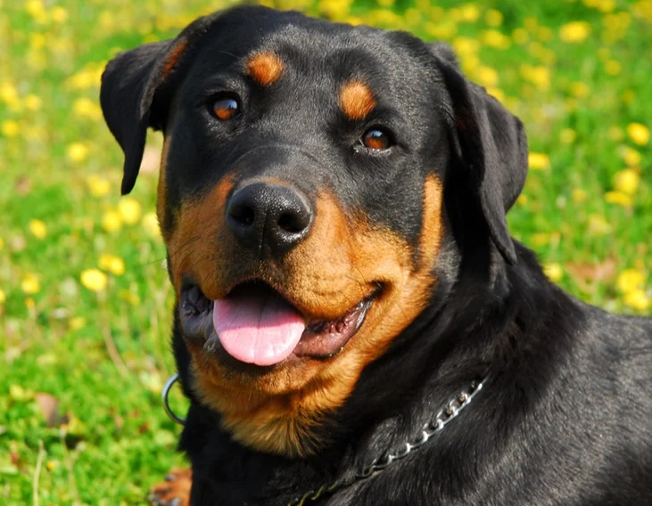
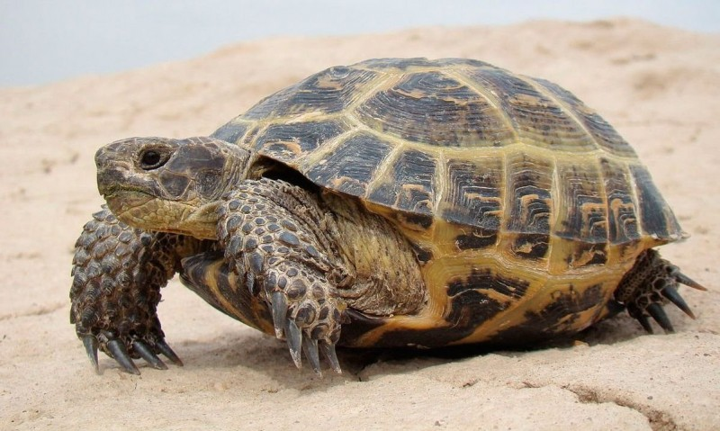

Mi perro

Yo tengo un perro que se llama Black y este es de raza Rottweiler
Mi tortuga

Esta es mi tortuga y se llama Jose. Jose tiene mas de 60 años(Mi abuela tenia a jose cuando ella tenia 8 años)
PD: A visto 3 generaciones de mi famila
Mi loro manuel
 ESte es mi loro samuel y es un muy travieso, siempre busca la manera de escapar de su jaula
Click aqui para volver
ESte es mi loro samuel y es un muy travieso, siempre busca la manera de escapar de su jaula
Click aqui para volver